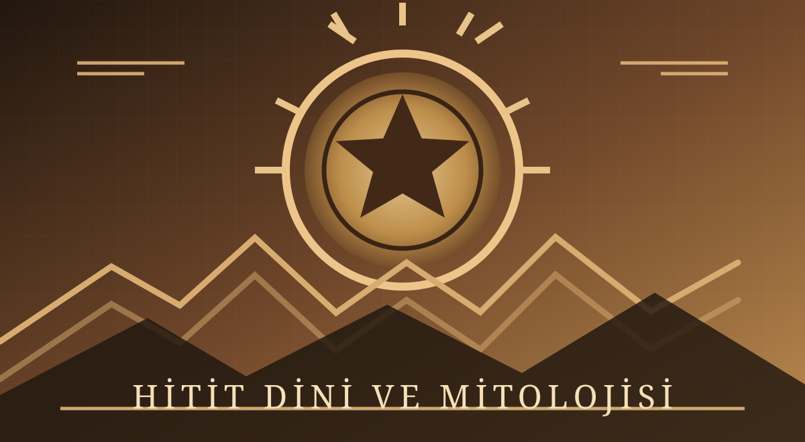
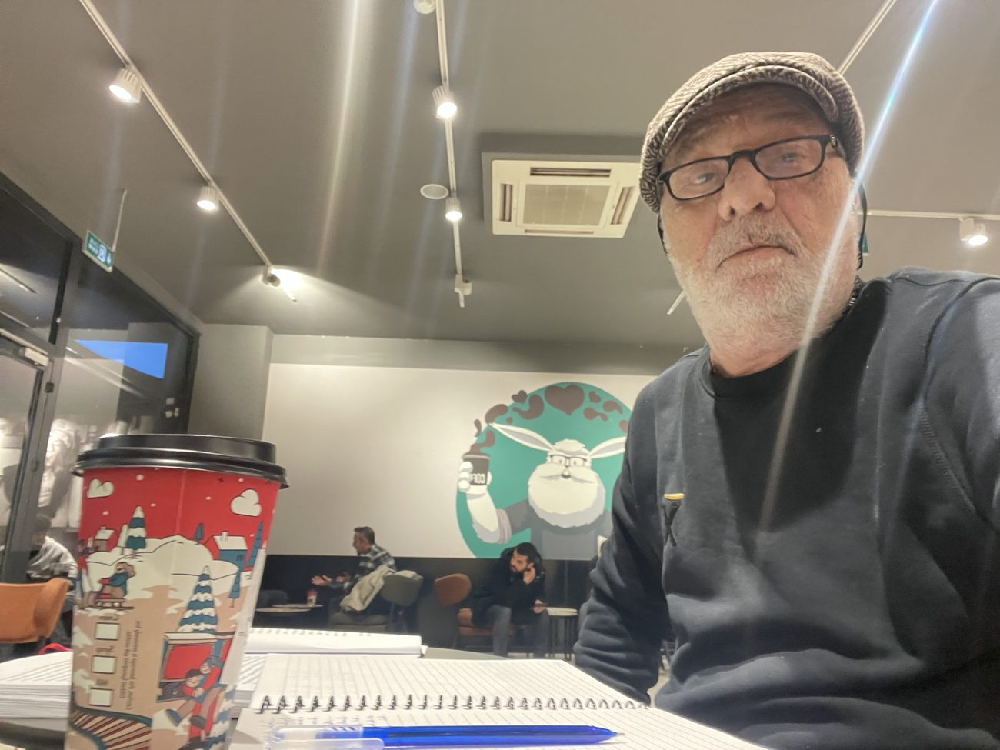
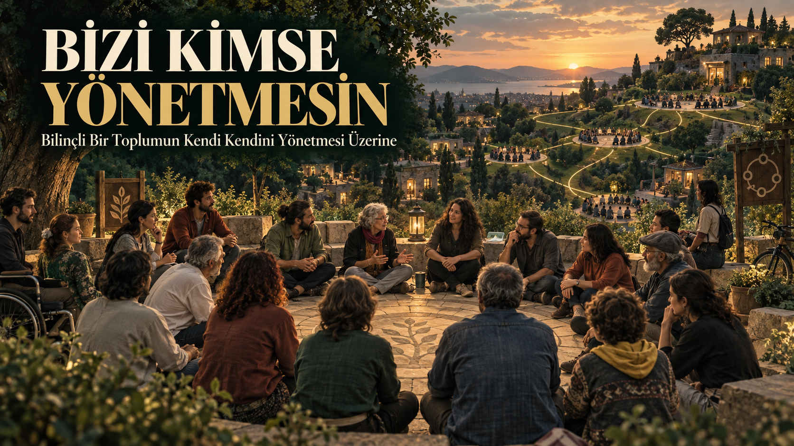

Düşüncenin ve Sözcüklerin İzinde
Yazılar
Denemeler, özgün düşünceler, toplumsal eleştiriler ve yaşamdan izler. Sözün özgürce yol aldığı bir patika.
Patika Dergi

Hitit Dini ve Mitolojisi
Eski Anadolu inançları, tanrılar, ritüeller ve mitolojik anlatılar üzerine 52 sayfalık görselli inceleme.

Varoluş Sancısı
Yaşamın anlamı, özgürlük ve insanın kendisini yeniden keşfetmesi.

Bizi Kimse Yönetmesin
Özgür ve eşit insanların birlikte yaşama imkânı.
Yönetim Ötenazisi
Tahakkümün sonu, özgürlüğün başlangıcı.